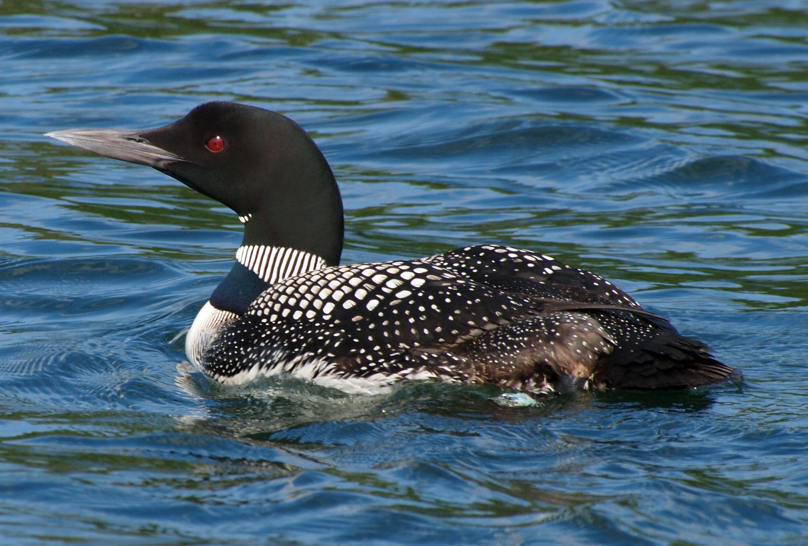

Data from northern Wisconsin link breeding-territory choice to shoreline development on natal lakes, while revealing a different nest response close to hatching.
A bird’s first lake may leave a lasting mark on its choice of the next. That is what a new study of common loons (Gavia immer) in northern Wisconsin suggests: the birds settled to breed in territories resembling their natal lakes in their level of shoreline development.
The study was published in Behavioral Ecology on 17 October 2026 as an accepted manuscript, before final copyediting and typesetting. Its authors are Emily Renkey, Katie Adler and Daniel Blumstein of the University of California, Los Angeles, and Walter Piper of Chapman University.
The first lake as a reference point
The researchers drew on a marked population in a long-term study in northern Wisconsin between 1992 and 2023 to investigate links between shoreline development and human activity, breeding-territory choice and nest-defense behavior.
Similarity in shoreline development was one of the striking findings. The researchers interpreted this pattern as an indication of natal habitat imprinting: features of the early environment becoming a reference for later breeding-habitat selection. This means choosing a similar environment, rather than necessarily returning to the same lake.
Closer to hatching, less likely to leave
In another part of the study, the team found no effect of shoreline development on the distance at which a loon left its nest as humans approached. Incubating birds were, however, less likely to leave the nest late in the incubation period.
The researchers view this response as consistent with greater investment in protecting a breeding attempt as hatching approaches. The finding concerns nest-leaving behavior under the study conditions; it does not establish that development or human approaches are harmless to the birds.
Are the birds responding to people or to food?
The match between natal and breeding lakes does not establish exactly which features the birds recognize. The researchers suggest another possibility: common loons may be seeking lakes with familiar fish-species communities, rather than being attracted by the level of human activity itself.
This remains a possible explanation, not a cause demonstrated by the findings. The distinction matters: a bird choosing a lake with familiar features does not mean it prefers buildings or is immune to their effects.
Choosing a habitat does not guarantee its safety
For conservation context, New Hampshire’s Loon Preservation Committee explains that development along lake shores and islands has reduced nesting habitat on many lakes. People approaching nests can also cause incubating birds to enter the water, leaving their eggs exposed to predators, heat or cold.
The Wisconsin study adds a behavioral perspective: the environment in which a bird grew up may influence its later choices, even when that environment includes a human presence. But the research concerns a particular species in a particular region. It is not sufficient to extend the finding to other birds or to wetlands in the Arab region.
Sources: Original study: Renkey and colleagues, Behavioral Ecology, 17 October 2026؛ Loon Preservation Committee: Threats to Loons؛ Photograph and provenance: John Picken / Wikimedia Commons؛ Photograph license: Creative Commons Attribution 2.0
Photo: John Picken, via Wikimedia Commons, licensed under CC BY 2.0. · CC BY 2.0